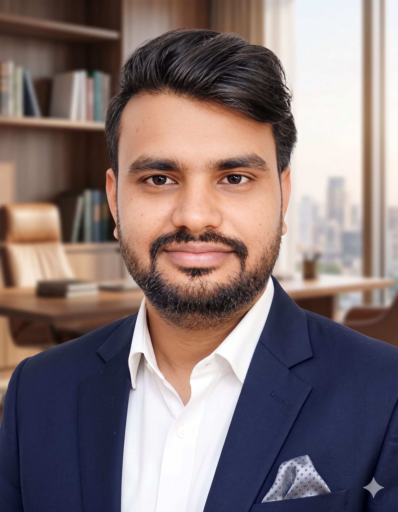

I sit between stakeholders and data: gathering requirements, building the SQL and Python behind them, and shipping Power BI reporting people actually rely on. Now moving deeper into data engineering and applied data science.

I started on the BFSI side at Tata Consultancy Services, writing Python and Java to automate customer communication workflows and cut data-processing time. From there I moved into a functional Business Analyst role on an HRMS product for TCS's Würth account, running requirement workshops, writing BRDs and SRSs, and owning UAT through to client sign-off.
Along the way, Power BI reporting became the constant thread: star-schema data models, DAX measures, and dashboards built to survive contact with real stakeholders. I went part-time at TCS in 2023 to start a full-time Master's in Data Science, finishing both in 2026.
I'm now looking for Data Analyst, Analytics Engineer, BI Engineer or Data Engineer roles across Europe, and studying toward Microsoft's Fabric certification along the way.
"Having a single point of contact helped a lot — requirements got handled on time, and it made things easier on their end." Würth, on the HRMS engagement · via TCS Chroma team, Jun 2023
"Your functional expertise helped us understand the complex HRMS system much better. You've been quick to respond and easy to work with." Würth client feedback · Feb 2026